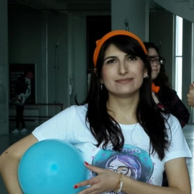

<div class="c-speaker">
    <div class="l-grid">
        <div class="l-grid__col--lg-4">
            <figure class="c-speaker__image">
                
            </figure>
        </div>
        <div class="l-grid__col l-grid__col--lg-8">
            <h3 class="c-speaker__name">Şirin Saygılı</h3>
            <p class="c-speaker__description">
			İTÜ Bilgisayar Mühendisliği bölümünden mezunum, şimdi doktora öğrencisiyim. Temel olarak ilgilendiğim alanlar bilgi edinilmesi (information retrieval), verinin işlenmesi (metin sınıflandırma, yazar tespiti) ve bu verinin bilgiye dönüştürülmesidir. Python, Java, PHP, Ubuntu, HTTP yığını, Linux-Apache-MySQL üçlüsü gündelik olarak kullandığım araçlardır. Prisync'in kurucu yazılımcılarından biriyim.
            </p>
            <ul class="list-unstyled c-speaker__social">
                <li class="c-speaker__social__item"><a href="https://www.facebook.com/" target="_blank"><i
                        class="fa fa-facebook"></i></a></li>
                <li class="c-speaker__social__item"><a href="https://github.com/sirin" target="_blank"><i
                        class="fa fa-github"></i></a></li>
                <li class="c-speaker__social__item"><a href="https://twitter.com/sirinnes" target="_blank"><i
                        class="fa fa-twitter"></i></a></li>
            </ul>
        </div>
    </div>
</div>
